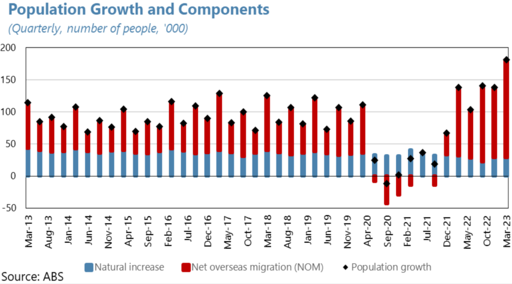
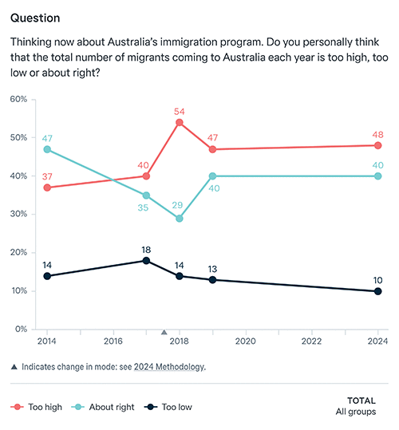

Most credible researchers believe immigration affects house prices. The questions are: how much, and at what cost?
This post aims to establish some baseline facts on the basis of which sensible arguments can be made about immigration and housing. Key points:
- Academic research supports the claim that cutting immigration would put slight downward pressure on housing costs, particularly for rentals.
- A general rule arising from the bulk of the studies is that 1% population increase from migration leads to a roughly 1% rise in housing prices. (We do not know for sure that these studies are correct.)
- This effect is modest and comes with a significant trade-off: reducing immigration would likely lower Australia's overall income growth.
- Immigration makes the greatest impact on prices in the rental market, as a majority of recent migrants are renters.
- Australia's current migration system does not effectively recruit construction workers to help increase housing supply.
Peter Dutton's Opposition has promised to cut Australian immigration by a quarter "to tackle the housing crisis".
Is migration is putting pressure on housing prices? And will a 25 per cent migration cut relieve that pressure?
These seem to be points on which not just the parties but the community differs. So it seems worthwhile to look at whether Dutton's stated position has any support in the literature. I've done this sort of research-check exercise before on Troppo, investigating issues such as minimum wages and violence against women. Below is my attempt on immigration and housing.
And my current tentative bottom line?
Yes, Peter Dutton's policy is somewhat defensible. Academic studies suggest lower immigration would put downward pressure on housing prices. Though only slightly, and not without cost.
Before I go into more detail, a preliminary observation: As in most fields of social science, anyone looking at the numbers on migration and housing prices needs to understand what they mean. A useful source here is the Australian Government Centre for Population's Fundamentals of migration in Australia: Migration concepts and measurements.
Defining the question
Here's what this post won't do much of: discuss here the non-housing effects of lowering immigration. We will look a bit at fiscal costs. But immigration's broader effects are a much wider debate. The details below might be a helpful input to the question of Australia's ideal immigration level; they do not constitute an answer to it. For instance, two respected economists, Grattan's Brendan Coates and Trent Wiltshire, have suggested that cutting immigration “may make our housing a bit cheaper ... but it would definitely make us poorer.” That is a perfectly coherent position.
It is also possible that other people want to avoid saying what Coates and Wiltshire have said because they fear it is too complicated to defend. That is unfortunate. It is also a rule not always followed in other fields. (For instance, in Australian politics it is perfectly acceptable to believe that a policy might lower overall economic growth, for instance, but be justified by its effect on the less well-off. Indeed, this position is frequently adopted, especially by people on the political left. Australia adopts all sorts of policies for all sorts of reasons.)
But at this point in our developing housing debate, failing to discuss the effect of migration looks ... well, kind of dishonest.
Australia's remarkable immigration success
Australia has some claim to have managed immigration better than any other developed nation.

The result of these policies has been that we have absorbed a lot of immigrants. Around 31 per cent of Australia's population is now overseas-born – higher than in New Zealand (29 per cent), Canada (21 per cent), the US (15 per cent) or the UK (14 per cent). If immigration does affect house prices, we might see it here in Australia.
Our success seems to be in part because in the 1980s we pioneered a specific program of skilled migration that people have accepted as a good thing for the country – possibly because it seems to have worked. (The minister who oversaw this was the late, great Chris Hurford, who could justly claim to be the most under-recognised change agent of the Hawke government.) Australia's immigration success has also been helped by the fact that after Labor has raised immigration rates and then been voted out, the next Liberal/National Party (LNP) government has typically tended to initially reduce immigration rates but then eventually restore them to around the level that Labor had chosen. (This is at least consistent with the broader idea of thermostatic public opinion.)
Dutton appears openly in favour of repeating this historical pattern. A few days before his Budget address in reply, he reportedly told Nine Radio: “Our plan is to reduce the permanent migration program down from where it is at the moment to 140,000 in year one and two, and then we bring it back up in years three and four”.
What Dutton says
Now to the substantive issue. Here's Dutton in his 2025 Budget reply:
“Under the Coalition, we will cut the migration intake to free up housing and restore the great Australian dream of home ownership ... We will cut the permanent migration program by 25 per cent ... We will set stricter caps on foreign students to relieve stress on rental markets.”
Note that Dutton's language here lacks discipline, even though it's pre-written. At points he's epistemologically cautious: the phrase “relieve stress” suggests a migration cut would lower rental prices compared to where they would be otherwise. At other times he's flamboyant, essentially claiming that a migration cut will fix the problem entirely “and restore the great Australian dream of home ownership” – which, to the extent it means anything, seems like hype.
But to the extent we can make out his claims, are they correct? Is migration is putting pressure on housing prices? Will a 25 per cent migration cut relieve that pressure?
Economic research on whether migration boosts housing prices
Pioneering work on the housing effects of migration comes from the current director of MIT's Urban Economics Lab, Albert Saiz. In 2003 he published “Room in the Kitchen for the Melting Pot: Immigration and Rental Prices”. Saiz estimated that this influx of Cuban immigrants – equivalent to 9 per cent of Miami's renter population – raised relevant Miami rents by between 8% and 11%. Saiz used a natural experiment, the Mariel boatlift of Cubans to Miami, that had been used earlier by Nobel Prize-winning economist David Card to check migration's effects on wages. Indeed, Saiz expanded on Card's results, suggesting that the rise in housing costs – mostly rents – represented a cut in real incomes for existing low-skilled Miami residents.
Four years later, Saiz generalised this to rents in US cities more generally, in a Journal of Urban Economics paper called “Immigration and housing rents in American cities”. His result: “An immigration inflow equal to 1% of a city's population is associated with increases in average rents and housing values of about 1%.” That paper, too, avoided conclusions about the overall national effect of US immigration on housing prices. But Saiz' work not only set the methodological template; it also set numbers that many researchers since have broadly confirmed: a 1 per cent migration increase gets you a 1 per cent housing price increase.
We have outliers, though. Take the work of Rosa Sanchis-Guarner, an assistant professor in economics at the University of Barcelona. In 2023 she published a paper in Regional Science and Urban Economics called “Decomposing the impact of immigration on house prices”. She aimed to test not just for direct effects from new arrivals to a country, but for indirect effects as existing residents relocated within the country. Her paper found a much larger effect than others have: in Spain between 2001 and 2012, she argued, “a 1 per cent increase in the immigration rate increases average house prices by 3.3%”.
Why the difference? Maybe Spain is different, or was different in that specific period. Maybe the difference is an artefact of her methodology. Maybe other economists results were subtly anchored by Saiz's one-to-one result. Maybe she miscalculated. We don't know.
Now, let's go local. In Australia, housing prices over the past two decades have risen by about 5 per cent a year. What does research say immigration has contributed to the Australian rise in housing prices?
- In 2020 two Victorian researchers, the Australian Energy Market Operator's Morteza Moallemi and Monash University's Daniel Melser, published “The impact of immigration on housing prices in Australia” in Papers in Regional Science. They explicitly used Saiz's instrumental variable approach. And they found a small, Saiz-scale effect: “An immigrant inflow of 1% of a postcode's population raises housing prices by around 0.9% per year. As a result, Australian housing prices would have been around 1.1% lower per annum had there been no immigration.”
- This paper seems particularly useful because the authors check their results against previous overseas work – and find their results are mostly consistent with that. “Mostly, researchers find a positive effect of immigrants on housing prices—such as Akbari and Aydede (2012) in Canada, Gonzalez and Ortega (2013) in Spain, Degen and Fischer (2017) in Switzerland, and Stillman and Maré (2008) and Coleman and Landon‐Lane (2007) in New Zealand. However, in the UK, Sa (2015) and Braakmann (2019) found negative effects of immigration on housing prices.”
- A pair of Mauritian (!) economists, Narvada Gopy-Ramdhany and Boopen Seetanah, published a paper in the International Journal of Housing Markets and Analysis in 2022, “Does immigration affect residential real estate prices? Evidence from Australia”. They look mostly at internal migration: “Migration that amounts to 1% of the initial local area population is associated with a 0.52% to 0.71% increase in house prices”. But they do say their results have implications for cross-border immigration: “Immigration and interstate migration ... have been causing a rise in housing demand and subsequently housing prices. To monitor exceedingly high housing prices, local authorities should be controlling migration ..."
- The IMF appears to have recently supported the idea that migration is marginally boosting Australian house prices. A January 2024 IMF analysis concluded: “Within Australia, migration surges have historically been associated with higher growth and favourable labour market outcomes, with negligible price pressures except in the housing market”. But the strongest thing they say is that “the house price-to-income ratio is lifted by about 2 percent within 4 years of a migration shock, reflecting the small increase in housing prices”. They add that “that effect is only marginally statistically significant”.
- In mid-2024, Australia's best-known independent think-tank, the Grattan Institute, published a report by economists Brendan Coates and Trent Wiltshire on migration effects. They gave it an interestingly long title, one that I suspect expressed the organisation's mixed feelings. The report, Cutting permanent migration may make housing cheaper, but it will definitely make us poorer, argued that “slowing the pace of migration would ease pressure on rents, especially since very few migrants arriving in Australia come with the skills to build the extra homes we need ... A higher migrant intake means higher housing costs”. It also noted that because so many migrants are students in the middle of courses, a quick cut would be hard to do. (But yes, it also pointed out that high migration pays a “fiscal dividend” worth several billion dollars a year: migrants on average end up paying more in Australian taxes than they get in government services and benefits.)
- Peter Tulip is the Centre for Independent Studies economist whose work more than anyone else's has explained how expanded housing supply will push prices down. He has been much more reserved about immigration's housing effects. But he has tweeted that lower immigration could reduce housing prices and rents. “Immigration puts upward pressure on housing costs," he wrote recently. “The 3% surge in population from 2006 to 2016 raised prices and rents by 9%”.
All those Australian studies looked at housing prices generally. It's worth remembering that some of our strongest evidence is that big migrant influxes push up rental prices, because migrants tend to rent. That was Saiz's original 2003 finding. And Eliza Owen, research chief at property data and analysis firm CoreLogic, notes that for Australia: “ABS data on permanent migrant settlement outcomes showed 60.8% of migrant arrivals in the five years to 2021 were renters.”
Initial synopsis: Recent migration rates have probably raised Australian housing prices. There's debate about the size of the effect, and lots of room for caution and elaboration. But a defensible description of the research is that, very broadly, we might expect a 1 per cent population increase through migration to push housing prices up by 1 per cent for some period. We would expect rentals to be more heavily and quickly affected. There's little in the literature on how long these effects might last. And we could expect to pay a long-term penalty for it in higher taxes and/or lower services and benefits.
(Note: Chinese researchers have published several papers – see an example here – on the housing price effects of internal migration within China. I've excluded all these studies from my little survey, in part because I am not sure Chinese internal migration is analogous enough to international migration, and in part because I have lower-than-usual trust in social science research done in China.)
Economists on migration's impact on the construction workforce
It's common in this debate to argue that we need new immigrants so that we can build more houses. But the actually existing Australian immigration and workforce systems fairly clearly do not work that way.
- In 2024 Grattan Institute economists Brendan Coates and Trent Wiltshire published a website article arguing that while US immigrants are disproportionately likely to work in construction, in Australia it's the opposite – immigrants are disproportionately unlikely to do construction work. If correct, this would tend to undermine the claim that we need more migrants to get more homes built – at least until we change our migration intake.
- Similarly, the 2023 Review of the migration system, an investigation led by respected former Treasury secretary Martin Parkinson, concluded that in 2023, Australia's migration program was putting up substantial hurdles to migration of the skilled tradespeople who would work in housing.
Initial synopsis: Australia's actual current migration system does not help reduce pressure on housing prices by importing construction workers. Australia is notably worse than the US at importing construction workers and putting them to work.
Reflections on the research
The key question is: how much does Australian migration affect housing prices here?
Before investigating this issue, I had two relevant beliefs:
- I was in favour of as much immigration as Australia can manage without disrupting its social cohesion. I have long been impressed at how well Australia has done here; arguably we are the immigration champions of the high-income world.
- I suspected that high migration must have some effect on housing prices. After all, new households are a key component of housing demand. Demand, like supply, influences price.

Source: Lowy Institute Poll 2024Not for the first time, I am discomfited to find that looking at research hasn't much altered my view of an issue. It has clarified for me that immigration effects will likely show up first among renters. It has also confirmed that the claim we need migration in order to build more homes is, at least for now, baloney.
And I'm glad that I have held my priors loosely, because the research isn't completely conclusive. It just tends to point in one direction: lower migration will reduce housing costs. It points firmly enough in that direction for policymakers and the media to take it seriously.
(This will probably come at a cost in other areas. Where do we want to be in that matrix of trade-offs? No research can really say for sure. There is evidence that Australians in general tend to think immigration is a bit high. See the results of Lowy's 2024 poll at left.)
A puzzling note
One thing puzzled me during my journey down this migration rabbit-hole. Several academic analysts argue that Australia will soon be back at its long-term trend rate of migration. I couldn't find any such analysts arguing that Australia should cut its immigration rate to below its long-term trend for a few years to let housing supply catch up. (If you can find one, please mention them in the comments.)
It seems perfectly reasonable to me to say that immigration policy has overshot a little, under both parties, and that this has put more pressure on housing prices than Australians are really comfortable with, and that we should correct that just in order to preserve our immigration consensus and to help solve our current housing issues. But very few people take that stance.
What media should do ...
For journalists, the research is strong enough that reporters discussing immigration should probably contextualise their discussion with sentences like this:
- “Economic research tends to suggest that higher immigration does tend to raise house prices, most notably for renters – though at a longer-term cost to the economy.”
- “Research suggests that the strength of new housing supply and the level of immigration help determine the level of housing prices.”
- “Studies don't show with any certainty the size of the effect. But Dutton's preferred immigration cut would probably reduce housing prices from what they would be otherwise. It would probably also lower Australian income growth over the coming decades.”
... when questioning the LNP
LNP leader Peter Dutton seems right in suggesting that an immigration cut would probably lower housing prices, especially for rentals, compared to where they would be otherwise. Here's the problem: Dutton seems wrong in suggesting that reducing migration alone can solve the housing price problem.
Those two positions are different. A journalist could usefully ask him which of them he is adopting.
Better still, journalists could start asking more about quantities – because the quantities matter. (Most journalists are relatively loath to pin down people's claims about them, in part because many journalists feel uncomfortable with arithmetic, statistics and numbers generally.)
Journalists do need to understand that Dutton wants very much to avoid discussion of quantities. He almost certainly knows that his claimed cut is not going to slow house price rises substantially, let alone cause prices to freeze or fall. If he is smart and disciplined, Dutton will try to use only comparative and directional language: “Lower immigration will help keep make housing more affordable, especially for renters.” A rigorous journalist will ask him about quantities of change: how much does he think his immigration policy will do to ease housing pressures. And an absolutely inspired journalist will somehow force him (this is often the really hard bit) to express his answer in clear and meaningful terms.
One possible question would be how much Dutton believes would be cut from Australia's medium-term average 5 per cent annual rise in house prices by his preferred 25 per cent cut in overall immigration.
Research suggests the most honest answer is: “We expect our immigration cut would reduce housing price rises by about 0.25% a year ongoing, or one-twentieth of the current average yearly price rise.” This is what journalists should want as an ideal answer. I do not expect him to actually say anything like that, because a) he probably hasn't been given the numbers, and b) to most people it sounds kind of underwhelming and won't solve all our problems by next Tuesday fortnight. (For the record, if he were to actually say something close to that, I would a) be astonished, and b) suggest some kind of major award be given to him for intelligent intellectual honesty.)
Feel free to suggest your own preferred sentences and questions in the comments.
... and when questioning the ALP
Prime Minister Anthony Albanese seems to have decided that migration should fall fairly quickly, though less quickly than Dutton is advocating. But rather than admit this will take pressure off housing prices, Albanese has tended to say just that increased housing supply will stop housing prices rising. One possible questions would be: “We've heard you want housing supply to rise. Would a further cut in immigration also reduce price rises?”
The honest answer would be: “Yes, a bigger cut would reduce price rises. But there comes a point where bigger cuts to immigration do more harm than good to the nation – and we have struck the balance that will be best for the country.” I'm kind of surprised that Albanese has stuck so adamantly to the “increase supply” mantra when this alternative line is available. His judgment about how much nuance people will take in ... well, it probably differs a bit from mine.
The bottom line: Less migration will likely affect housing prices, a bit, at a cost
You can easily make a case that the economic impact of migration on housing is one of the most important issues for governments of high-income nations. Yet most people talking about it seem to be armed with very little intellectual ammunition. And most journalists asking about it seem gun-shy about asking how-much questions.
Our original questions were: Is migration is putting pressure on housing prices? And will a 25 per cent migration cut relieve that pressure?
The likely answer: Migration affects housing prices, and particularly affects rental prices. It affects them enough that Australia's 2023 migration spike might have worsened the rental crisis we saw in most Australian cities. It affects them enough that lowering migration by 25 per cent might reduce broader housing prices slightly in the medium term. And it affects them enough that lowering migration by 25 per cent might lower housing rental prices more quickly. But such a cut would probably lower Australians' income growth over the years ahead too.
None of those effects are all that big, but as best as social science can tell right now, they are probably there.
Disclosure: My firm Shorewalker DMS, has been editorial consultant on several reports into housing prices which have argued that new supply plays a pivotal long-term role in reducing housing costs as a share of income.
Additions and comments: I'm very much in the market for good studies to add to this list, no matter in which direction they point. And as usual, yes, I'm an idiot about a lot of things. I really will be grateful if you can point out in the comments specifically where my idiocy lies, and detail the huge mistake(s) I'm making.

About the author: I am the principal of Shorewalker DMS, an editorial advisory firm. Shorewalker DMS specialises in helping organisations make their reports clearer, more complete and more persuasive. See our work and hire us at https://shorewalker.net.
Twitter: @shorewalker1
Thanks -- that was interesting. As a random comparison, I note that house prices in Adelaide are now more than Melbourne, despite Melbourne taking more immigrants as a percentage of the size of their population than Adelaide and Melbourne being a richer place. This suggests that, in this case, the change due to non-migration factors must outweigh migration by a lot. One of the curious things about this is that I hear very little political discourse about the factors that actually must cause such differences, so if Albanese is saying supply can solve the problem, perhaps he should be telling people how that has worked in Melbourne and could work in other cities.
Conrad, you may not have accounted for migration from other Australian states. Net interstate migration, which for decades detracted from SA population growth, turned positive in early 2020 and mostly stayed positive until the end of 2022. I suspect this has played a big role in rising SA house prices over the past four years. I don't really expect Adelaide's house prices to stay above Melbourne's for very long, though. Melbourne prices peaked in March 2022. There are suggestions that Adelaide's prices have begun to turn down in the past three months, though I wouldn't bet anyone's house on that.
David Problems re not enough houses,seem to be common to Australia the UK and the US. Do wonder what do or could , we all have in common? PS Look forward to your thoughts on dentistry and medivao
Not just those three but also Canada, parts of New Zealand, Ireland, Norway, Switzerland, Sweden, The Netherlands ... It's not so much "those three nations" as "most of the world's highest-income nations". We just tend to hear more about the US and the UK because their media are the most accessible. These shortages have worsened over a long period of time. The explanations have been set out best by the CIS's ex-RBA chief economist, Peter Tulip, and by the NSW Productivity and Equality Commission (whose analysis spans several volumes). The big explanations are: rising restrictions on building in middle and particularly inner suburbs (the most popular areas to live)continuing restrictions on building on the city fringeOther likely issues, which often interact with those above, include: new concessional tax treatments, mainly negative gearing and the capital gains tax discount (though these should have had a one-off effect at their introduction, rather than a continuing influence – but that does mean removing them should provoke a one-off immediate fall)immigration issues (see above)insufficient increase in trained building labour (partly because big infrastructure projects pay so well)COVID-related supply chain disruptionsrising regulation of building requirements (such as double-glazing for windows)rising limits on supply of building materials like lumberattractions of working on high-value buildings (which have grown in number in line with rising wealth disparities)
At the level of the small town I live in;
It's simply the sheer complexity ; so many layers of different regulations and standards etc these days that's really striking.
Plus for our LG despite it's spend on administration going up by about 20 percent a year for several years , it doesn't have enough staff to do simple things like certify new concrete footings in less than six months . Yet despite it struggling to administer existing regulations our LG regularly calls for community responses to proposed , additional regulations.
To March 2024 Australia's population grew by 2.3% to 27.1m. Of that 83% was due to immigration. Most immigrants settle in major cities where other immigrants live and where most jobs occur and where most housing is sold. Residents switching houses don't have an effect on the overall stock of housing that is available. Immigrants settling in Australia do affect the availability of housing because they are not giving up one home in Australia to gain another. Such effects will be split between rental and outright purchase but in both cases they will eat into the availability of the housing stock for residents in a major way since immigrants are by far the main type of additional purchaser. If you visit large new urban settlements in Melbourne, for example Clyde in the South East, the advertising signs feature pictures of Chinese and Indians. It is quite clear why the Housing Industry Association are such strong supporters of high rates of immigration. And it is quite clear why you should expect a strong effect of immigration on house prices on a priori grounds not the small effects that some empirical economists claim to identify. There are a host of statistical issues here that, as with immigration effects on wages, plague attempts to measure net effects. Roughly there are effects on supply as well as demand incentives and complex lead lag issues that make it difficult to associate extra immigrants with house prices in any given period. One thing you don't identify is the welfare loss (if any) that immigration imposes on resident Australians. If residents can sell either new or existing housing into a larger market they are better off since the gains to sellers exceed the losses to local buyers (easily proved using a simple surplus argument). This is an efficiency argument however. The losers here are young Australians buying their first houses and the gainers are older property owners. The argument then is distributional - immigration provides returns to those with property and punishes those without. Its the same as effects on wages - these fall given an increased supply of labour (I ignore the econometric gobbledegook that again mystifies argument here) but owners of fixed assets and capital gain - again, in general, the oldies.
Harry
Think it's a bit more nuanced.
For example
We travel in regional to remote parts quite a lot, most places we go to have significant populations of new arrivals from India Mid east Pacific, you name it ,and these people overall sure seem to be already part of the local community. And many of these new arrivals are doing useful, needed work.
Increased rates of family breakdown are also a factor. I know from Anglicare Goulburn NSW that the big increase in family breakdowns during covid effectively meant that there was a sudden need for hundreds of new seperate dwellings for , exactly the same total number of people in Goulburn.
immigration also doesn't explain why:
despite houses increasingly being ' flat packs ' mass produced in factories, our productivity, the ' work hours ' needed to deliver A new home or apartment is actually worse than it was years and years ago
The overseas research you cite might not be relevant to Australia since (a) we don't build enough housing in response and (b) we have unique tax exemptions. One point that I have never seen made: what is the downside of experimenting with a large reduction in migration for a few years? It can be entirely reversed very quickly. Just ramp it up and you will quickly get back to where you would have been. Whereas, when you increase migration, it is politically irreversible.
For the reason that the admin of this site is working, no uncertainty very quickly it will be renowned, due to its quality contents.
Harry, my intent here has simply been to explain what various economists say about the interactions between immigration and house prices. If you can suggest some different studies than the ones I have cited, and that come to a different conclusion, I would genuinely be happy to see them and – if they check out – to write them into the post. I genuinely do not have a horse in this race, apart from better understanding of policy effects. (Note that I do say in the post that I'm not looking deep into overall welfare effects; that's a different and more complicated discussion.)
I agree to an extent with your second para. See my own thoughts above, under the heading "A puzzling note".